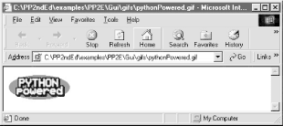
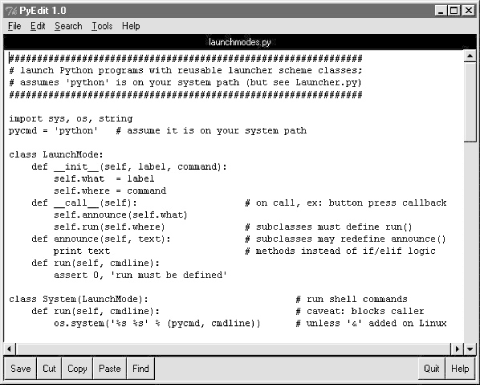

| I l@ve RuBoard |
|
3.8 Launching Programs on WindowsSuppose just for a moment, that you've been asked to write a big Python book, and want to provide a way for readers to easily start the book's examples on just about any platform that Python runs on. Books are nice, but it's awfully fun to be able to click on demos right away. That is, you want to write a general and portable launcher program in Python, for starting other Python programs. What to do? In this chapter, we've seen how to portably spawn threads, but these are simply parallel functions, not external programs. We've also learned how to go about starting new, independently running programs, with both the fork/exec combination, and tools for launching shell commands such as os.popen. Along the way, though, I've also been careful to point out numerous times that the os.fork call doesn't work on Windows today, and os.popen fails in Python release 1.5.2 and earlier when called from a GUI program on Windows; either of these constraints may be improved by the time you read this book (e.g., 2.0 improves os.popen on Windows), but they weren't quite there yet as I wrote this chapter. Moreover, for reasons we'll explore later, the os.popen call is prone to blocking (pausing) its caller in some scenarios. Luckily, there are other ways to start programs in the Python standard library, albeit in platform-specific fashion:
3.8.1 The os.spawnv CallOf these, the spawnv call is the most complex, but also the most like forking programs in Unix. It doesn't actually copy the calling process (so shared descriptor operations won't work), but can be used to start a Windows program running completely independent of the calling program. The script in Example 3-22 makes the similarity more obvious -- it launches a program with a fork/exec combination in Linux, or an os.spawnv call on Windows. Example 3-22. PP2E\System\Processes\spawnv.py############################################################
# start up 10 copies of child.py running in parallel;
# use spawnv to launch a program on Windows (like fork+exec)
# P_OVERLAY replaces, P_DETACH makes child stdout go nowhere
############################################################
import os, sys
for i in range(10):
if sys.platform[:3] == 'win':
pypath = r'C:\program files\python\python.exe'
os.spawnv(os.P_NOWAIT, pypath, ('python', 'child.py', str(i)))
else:
pid = os.fork( )
if pid != 0:
print 'Process %d spawned' % pid
else:
os.execlp('python', 'python', 'child.py', str(i))
print 'Main process exiting.'
Call os.spawnv with a process mode flag, the full directory path to the Python interpreter, and a tuple of strings representing the DOS command line with which to start a new program. The process mode flag is defined by Visual C++ (whose library provides the underlying spawnv call); commonly used values include:
Run a dir(os) call to see other process flags available, and either run a few tests or see VC++ documentation for more details; things like standard stream connection policies vary between the P_DETACH and P_NOWAIT modes in subtle ways. Here is this script at work on Windows, spawning 10 independent copies of the child.py Python program we met earlier in this chapter: C:\...\PP2E\System\Processes>type child.py import os, sys print 'Hello from child', os.getpid( ), sys.argv[1] C:\...\PP2E\System\Processes>python spawnv.py Hello from child -583587 0 Hello from child -558199 2 Hello from child -586755 1 Hello from child -562171 3 Main process exiting. Hello from child -581867 6 Hello from child -588651 5 Hello from child -568247 4 Hello from child -563527 7 Hello from child -543163 9 Hello from child -587083 8 Notice that the copies print their output in random order, and the parent program exits before all children do; all these programs are really running in parallel on Windows. Also observe that the child program's output shows up in the console box where spawnv.py was run; when using P_NOWAIT standard output comes to the parent's console, but seems to go nowhere when using P_DETACH instead (most likely a feature, when spawning GUI programs). The os.spawnve call works the same as os.spawnv, but accepts an extra fourth dictionary argument to specify a different shell environment for the spawned program (which, by default, inherits all the parent's settings). 3.8.2 Running DOS Command LinesThe os.system and os.popen calls can be used to start command lines on Windows just as on Unix-like platforms (but with the portability caveats about popen mentioned earlier). On Windows, though, the DOS start command combined with os.system provides an easy way for scripts to launch any file on the system, using Windows filename associations. Starting a program file this way makes it run as independently as its starter. Example 3-23 demonstrates these launch techniques. Example 3-23. PP2E\System\Processes\dosstart.py############################################################
# start up 5 copies of child.py running in parallel;
# - on Windows, os.system always blocks its caller,
# and os.popen currently fails in a GUI programs
# - using DOS start command pops up a DOS box (which goes
# away immediately when the child.py program exits)
# - running child-wait.py with DOS start, 5 independent
# DOS console windows popup and stay up (1 per program)
# DOS start command uses file name associations to know
# to run Python on the file, as though double-clicked in
# Windows explorer (any filename can be started this way);
############################################################
import os, sys
for i in range(5):
#print os.popen('python child.py ' + str(i)).read( )[:-1]
#os.system('python child.py ' + str(i))
#os.system('start child.py ' + str(i))
os.system('start child-wait.py ' + str(i))
print 'Main process exiting.'
Uncomment one of the lines in this script's for loop to experiment with these schemes on your computer. On mine, when run with either of the first two calls in the loop uncommented, I get the following sort of output -- the text printed by five spawned Python programs: C:\...\PP2E\System\Processes>python dosstart.py Hello from child -582331 0 Hello from child -547703 1 Hello from child -547703 2 Hello from child -547651 3 Hello from child -547651 4 Main process exiting. The os.system call usually blocks its caller until the spawned program exits; reading the output of a os.popen call has the same blocking effect (the reader waits for the spawned program's output to be complete). But with either of the last two statements in the loop uncommented, I get output that simply looks like this: C:\...\PP2E\System\Processes>python dosstart.py Main process exiting. In both cases, I also see five new and completely independent DOS console windows appear on my display; when the third line in the loop is uncommented, all the DOS boxes go away right after they appear; when the last line in the loop is active, they remain on the screen after the dosstart program exits because the child-wait script pauses for input before exit. 3.8.2.1 Using the DOS start commandTo understand why, you first need to know how the DOS start command works in general. Roughly, a DOS command line of the form start command works as if command were typed in the Windows "Run" dialog box available in the Start button menu. If command is a filename, it is opened exactly as if its name had been double-clicked in the Windows Explorer file selector GUI. For instance, the following three DOS commands automatically start Internet Explorer on a file index.html, my registered image viewer program on a uk-1.jpg, and my sound media player program on file sousa.au. Windows simply opens the file with whatever program is associated to handle filenames of that form. Moreover, all three of these programs run independently of the DOS console box where the command is typed: C:\temp>start c:\stuff\website\public_html\index.html C:\temp>start c:\stuff\website\public_html\uk-1.jpg C:\...\PP2E\System\Processes>start ..\..\Internet\Ftp\sousa.au Now, because the start command can run any file and command line, there is no reason it cannot also be used to start an independently running Python program: C:\...\PP2E\System\Processes>start child.py 1 Because Python is registered to open names ending in .py when it is installed, this really does work -- script child.py is launched independently of the DOS console window, even though we didn't provide the name or path of the Python interpreter program. Because child.py simply prints a message and exits, though, the result isn't exactly satisfying: a new DOS window pops up to serve as the script's standard output, and immediately goes away when the child exits (it's that Windows "flash feature" described earlier!). To do better, add a raw_input call at the bottom of the program file to wait for a key press before exiting: C:\...\PP2E\System\Processes>type child-wait.py
import os, sys
print 'Hello from child', os.getpid( ), sys.argv[1]
raw_input("Press <Enter>") # don't flash on Windows
C:\...\PP2E\System\Processes>start child-wait.py 2
Now the child's DOS window pops up and stays up after the start command has returned. Pressing the Enter key in the pop-up DOS window makes it go away. 3.8.2.2 Using start in Python scriptsSince we know that Python's os.system and os.popen can be called by a script to run any command line that can be typed at a DOS shell prompt, we can also start independently running programs from a Python script by simply running a DOS start command line. For instance: C:\...\PP2E>python
>>> import os
>>>
>>> cmd = r'start c:\stuff\website\public_html\index.html' # start IE browser
>>> os.system(cmd) # runs independent
0
>>> file = r'gui\gifs\pythonPowered.gif' # start image viewer
>>> os.system('start ' + file) # IE opens .gif for me
0
>>> os.system('start ' + 'Gui/gifs/PythonPowered.gif') # fwd slashes work too
0
>>> os.system(r'start Internet\Ftp\sousa.au') # start media bar
0
The four Python os.system calls here start whatever web-page browser, image viewer, and sound player are registered on your machine to open .html, .gif, and .au files (unless these programs are already running). The launched programs run completely independent of the Python session -- when running a DOS start command, os.system does not wait for the spawned program to exit. For instance, Figure 3-1 shows the .gif file handler in action on my machine, generated by both the second and third os.system calls in the preceding code. Figure 3-1. Started image viewer (Internet Explorer)Now, since we also know that a Python program be can started from a command line, this yields two ways to launch Python programs: C:\...\PP2E>python >>> os.system(r'python Gui\TextEditor\textEditor.pyw') # start and wait 0 >>> os.system(r'start Gui\TextEditor\textEditor.pyw') # start, go on 0 When running a python command, the os.system call waits (blocks) for the command to finish. When running a start command it does not -- the launched Python program (here, PyEdit, a text editor GUI we'll meet in Chapter 9) runs independent of the os.system caller. And finally, that's why the following call in dosstart.py generates a new, independent instance of child-wait.py : C:\...\PP2E\System\Processes>python
>>> os.system('start child-wait.py 1')
0
When run, this call pops up a new, independent DOS console window to serve as the standard input and output streams of the child-wait program. It truly is independent -- in fact, it keeps running if we exit both this Python interpreter session and the DOS console box where the command was typed.[9] An os.popen call can launch a start command too; but since it normally starts commands independently anyhow, the only obvious advantages of start here are the pop-up DOS box, and the fact that Python need not be in the system search path setting:
>>> file = os.popen('start child-wait.py 1') # versus: python child-wait...
>>> file.read( )
'Hello from child -413849 1\012Press <Enter>'
Which scheme to use, then? Using os.system or os.popen to run a python command works fine, but only if your users have added the python.exe directory to their system search path setting. Running a DOS start command is often a simpler alternative to both running python commands and calling the os.spawnv function, since filename associations are automatically installed along with Python, and os.spawnv requires a full directory path to the Python interpreter program (python.exe). On the other hand, running start commands with os.system calls can fail on Windows for very long command-line strings: >>> os.system('start child-wait.py ' + 'Z'*425) # okay- 425 Zs in dos popup
0
>>> os.system('start child-wait.py ' + 'Z'*450) # fails- msg, not exception
Access is denied.
0
>>> os.popen('python child-wait.py ' + 'Z'*500).read( ) # works if PATH set
>>> os.system('python child-wait.py ' + 'Z'*500) # works if PATH set
>>> pypath = r'C:\program files\python\python.exe' # this works too
>>> os.spawnv(os.P_NOWAIT, pypath, ('python', 'child-wait.py', 'Z'*500))
As a rule of thumb, use os.spawnv if your commands are (or may be) long. For instance, we'll meet a script in Chapter 4, that launches web browsers to view HTML files; even though a start command applied to an HTML file will automatically start a browser program, this script instead must use os.spawnv to accommodate potentially long directory paths in HTML filenames. For more information on other Windows-specific program launcher tools, see O'Reilly's Python Programming on Win32. Other schemes are even less standard than those shown here, but are given excellent coverage in that text. 3.8.3 A Portable Program-Launch FrameworkWith all these different ways to start programs on different platforms, it can be difficult to remember what tools to use in a given situation. Moreover, some of these tools are called in ways that are complicated enough to easily forget (for me, at least). I write scripts that need to launch Python programs often enough that I eventually wrote a module to try and hide most of the underlying details. While I was at it, I made this module smart enough to automatically pick a launch scheme based on the underlying platform. Laziness is the mother of many a useful module. Example 3-24 collects many of the techniques we've met in this chapter in a single module. It implements an abstract superclass, LaunchMode, which defines what it means to start a Python program, but doesn't define how. Instead, its subclasses provide a run method that actually starts a Python program according to a given scheme, and (optionally) define an announce method to display a program's name at startup time. Example 3-24. PP2E\launchmodes.py###############################################################
# launch Python programs with reusable launcher scheme classes;
# assumes 'python' is on your system path (but see Launcher.py)
###############################################################
import sys, os, string
pycmd = 'python' # assume it is on your system path
class LaunchMode:
def __init__(self, label, command):
self.what = label
self.where = command
def __call__(self): # on call, ex: button press callback
self.announce(self.what)
self.run(self.where) # subclasses must define run( )
def announce(self, text): # subclasses may redefine announce( )
print text # methods instead of if/elif logic
def run(self, cmdline):
assert 0, 'run must be defined'
class System(LaunchMode): # run shell commands
def run(self, cmdline): # caveat: blocks caller
os.system('%s %s' % (pycmd, cmdline)) # unless '&' added on Linux
class Popen(LaunchMode): # caveat: blocks caller
def run(self, cmdline): # since pipe closed too soon
os.popen(pycmd + ' ' + cmdline) # 1.5.2 fails in Windows GUI
class Fork(LaunchMode):
def run(self, cmdline):
assert hasattr(os, 'fork') # for linux/unix today
cmdline = string.split(cmdline) # convert string to list
if os.fork( ) == 0: # start new child process
os.execvp(pycmd, [pycmd] + cmdline) # run new program in child
class Start(LaunchMode):
def run(self, cmdline): # for windows only
assert sys.platform[:3] == 'win' # runs independent of caller
os.system('start ' + cmdline) # uses Windows associations
class Spawn(LaunchMode): # for windows only
def run(self, cmdline): # run python in new process
assert sys.platform[:3] == 'win' # runs independent of caller
#pypath = r'C:\program files\python\python.exe'
try: # get path to python
pypath = os.environ['PP2E_PYTHON_FILE'] # run by launcher?
except KeyError: # if so configs env
from Launcher import which, guessLocation
pypath = which('python.exe', 0) or guessLocation('python.exe', 1,0)
os.spawnv(os.P_DETACH, pypath, ('python', cmdline)) # P_NOWAIT: dos box
class Top_level(LaunchMode):
def run(self, cmdline): # new window, same process
assert 0, 'Sorry - mode not yet implemented' # tbd: need GUI class info
if sys.platform[:3] == 'win':
PortableLauncher = Spawn # pick best launcher for platform
else: # need to tweak this code elsewhere
PortableLauncher = Fork
class QuietPortableLauncher(PortableLauncher):
def announce(self, text):
pass
def selftest( ):
myfile = 'launchmodes.py'
program = 'Gui/TextEditor/textEditor.pyw ' + myfile # assume in cwd
raw_input('default mode...')
launcher = PortableLauncher('PyEdit', program)
launcher( ) # no block
raw_input('system mode...')
System('PyEdit', program)( ) # blocks
raw_input('popen mode...')
Popen('PyEdit', program)( ) # blocks
if sys.platform[:3] == 'win':
raw_input('DOS start mode...') # no block
Start('PyEdit', program)( )
if __name__ == '__main__': selftest( )
Near the end of the file, the module picks a default class based on the sys.platform attribute: PortableLauncher is set to a class that uses spawnv on Windows and one that uses the fork/exec combination elsewhere. If you import this module and always use its PortableLauncher attribute, you can forget many of the platform-specific details enumerated in this chapter. To run a Python program, simply import the PortableLauncher class, make an instance by passing a label and command line (without a leading "python" word), and then call the instance object as though it were a function. The program is started by a call operation instead of a method, so that the classes in this module can be used to generate callback handlers in Tkinter-based GUIs. As we'll see in the upcoming chapters, button-presses in Tkinter invoke a callable-object with no arguments; by registering a PortableLauncher instance to handle the press event, we can automatically start a new program from another program's GUI. When run standalone, this module's selftest function is invoked as usual. On both Windows and Linux, all classes tested start a new Python text editor program (the upcoming PyEdit GUI program again) running independently with its own window. Figure 3-2 shows one in action on Windows; all spawned editors open the launchmodes.py source file automatically, because its name is passed to PyEdit as a command-line argument. As coded, both System and Popen block the caller until the editor exits, but PortableLauncher (really, Spawn or Fork) and Start do not:[10]
C:\...\PP2E>python launchmodes.py default mode... PyEdit system mode... PyEdit popen mode... PyEdit DOS start mode... PyEdit Figure 3-2. PyEdit program spawned from launchmodesAs a more practical application, this file is also used by launcher scripts designed to run examples in this book in a portable fashion. The PyDemos and PyGadgets scripts at the top of this book's examples directory tree (view CD-ROM content online at http://examples.oreilly.com/python2) simply import PortableLauncher, and register instances to respond to GUI events. Because of that, these two launcher GUIs run on both Windows and Linux unchanged (Tkinter's portability helps too, of course). The PyGadgets script even customizes PortableLauncher to update a label in a GUI at start time: class Launcher(launchmodes.PortableLauncher): # use wrapped launcher class
def announce(self, text): # customize to set GUI label
Info.config(text=text)
We'll explore these scripts in Part II (but feel free to peek at the end of Chapter 8, now). Because of this role, the Spawn class in this file uses additional tools to search for the Python executable's path -- required by os.spawnv. It calls two functions exported by a file Launcher.py to find a suitable python.exe, whether or not the user has added its directory to their system PATH variable's setting. The idea is to start Python programs, even if Python hasn't been installed in the shell variables on the local machine. Because we're going to meet Launcher.py in Chapter 4, though, I'm going to postpone further details for now. |
| I l@ve RuBoard |
|